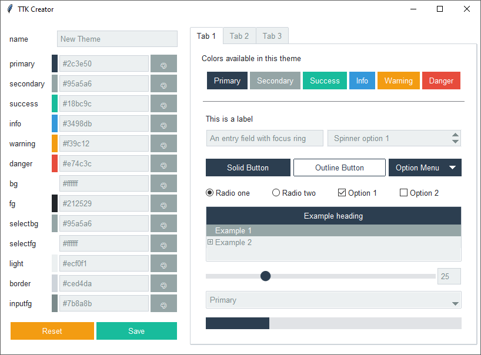
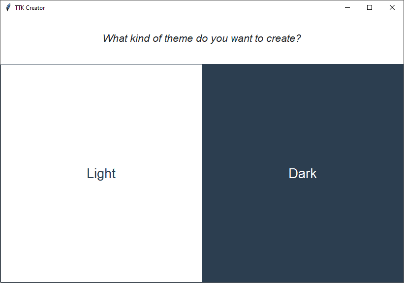
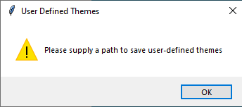
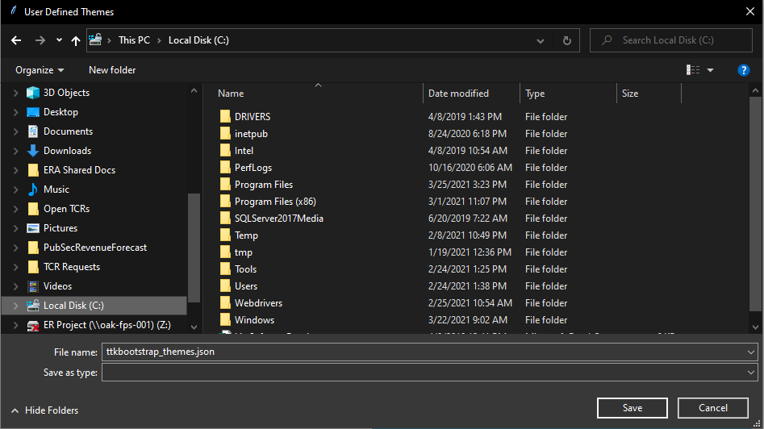

TTK Creator¶
TTK Creator is a program that makes it really easy to create and use your own defined themes.
Select a base theme¶
When you start TTK Creator, you’ll be prompted to select a light or dark theme base. The reason you need to choose a base is that there are some nuanced differences in how the elements are constructed in a light vs a dark theme.
The first time you start TTK Creator, or if you happen to upgrade the package, you’ll be prompted to select the destination for your user-defined themes file. It is recommended to store these themes in a location that is safe and writable. It is not recommended to store themes in the package directory as they may get overwritten if the package is updated, re-installed, etc…
 Note
If you are pointed to an existing file, the dialogue will ask you if you want to overwrite the file. Click YES. The file will not actually get overwritten if it already exists. I couldn’t find a setting in the widget to overide this… post it on GitHub if you know a solution.
Create and save your theme¶
You should now see the TTK Creator design window
Name your theme
Click the color palette to select a color, or input a hex color directly
Click Save to save your theme
Click Reset to apply the defaults and start from scratch
Theme names must be unique. If you choose a theme name that already exists, you will be prompted to choose another.
You can check your new theme by starting up the ttkbootstrap demo application, which will load all available themes. Then, select your new theme from the option menu.
python -m ttkbootstrap
Warning
If you are using Linux or MacOS and the program crashes without starting, you may not have a font with
emojii support. To fix this sudo apt-get install fonts-symbola